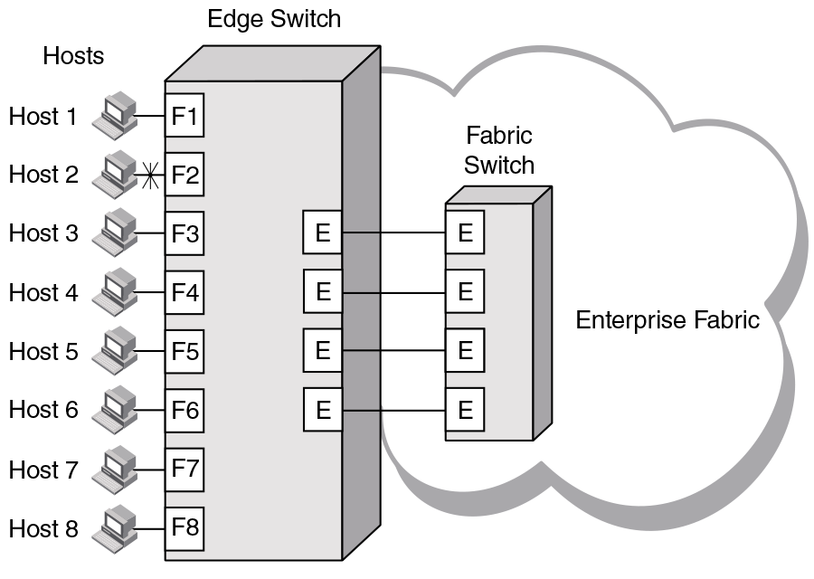
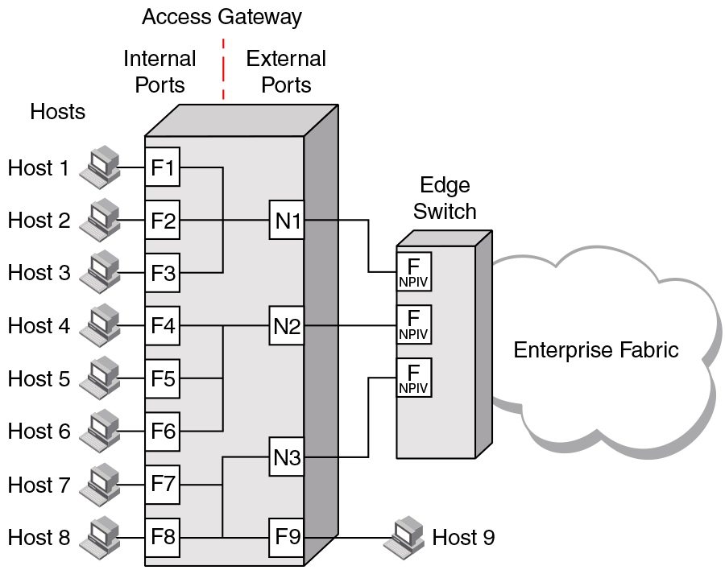

Comparing Native Fabric and Access Gateway modes
The following points summarize the differences between a Fabric OS switch functioning in Native operating mode and a Fabric OS switch functioning in AG operating mode:
- The Fabric OS switch in Native mode is a part of the fabric; it requires two to four times as many physical ports, consumes fabric resources, and can connect to a Fabric OS fabric only.
- A switch in AG mode is outside of the fabric; it reduces the number of switches in the fabric and the number of required physical ports. You can connect a switch in AG mode to a Fabric OS, M-EOS, or Cisco-based fabric.
The following figures show differences between the switch function in Native mode and switch function in AG mode.

Figure 1. Switch function in Native mode

Figure 2. Switch function in Access Gateway mode